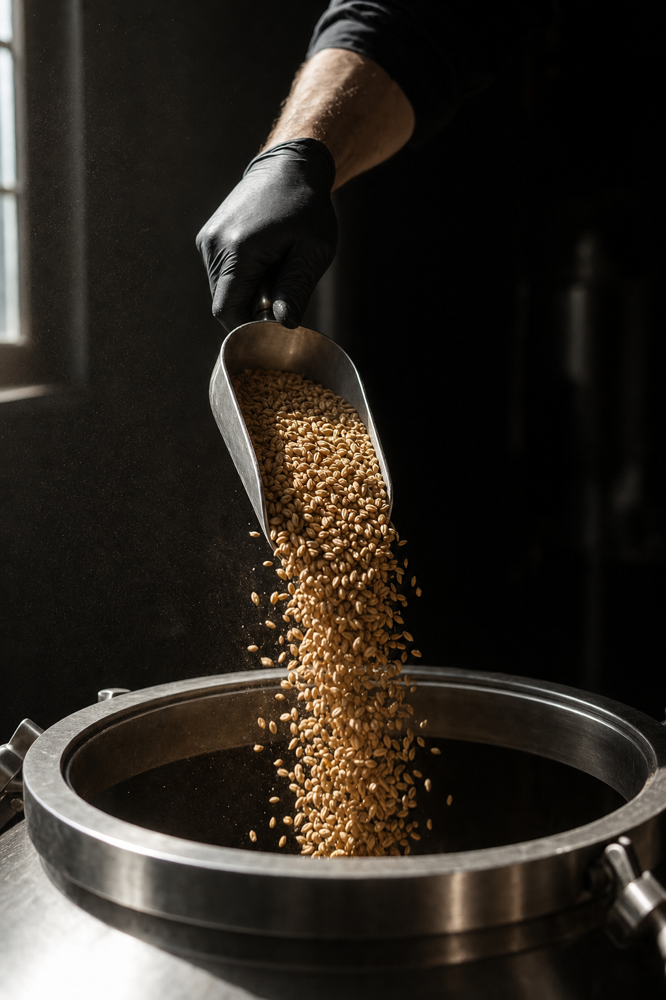
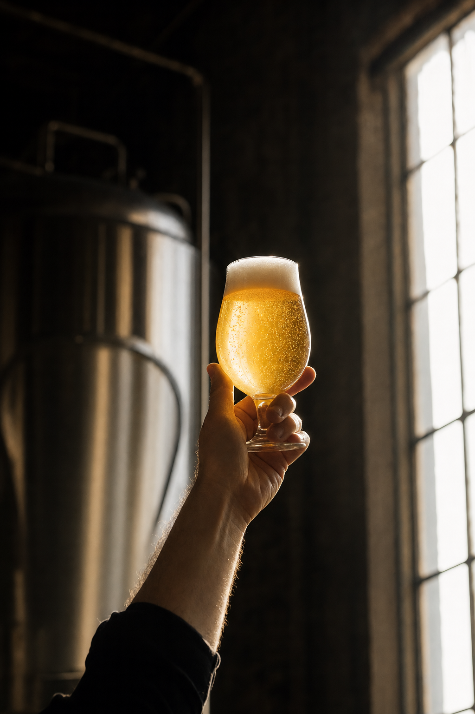

01 · The read
A medal is a
process story.
Dominique, this is Nelson Taylor, a director and shooter of brand content based in Dallas–Fort Worth. Reading the winners list, one line stopped me: a gold medal in the Saison category at the 2026 Great American Beer Festival, for House of Zest, False Idol Brewing, North Richland Hills. Congratulations to you and everyone in the brewhouse.
A medal is a line of type on a list. What earned it happened on a brew day, on the 10-barrel brewhouse your site says every False Idol beer is brewed on: grain, water, steam, stainless and a lot of careful hands. That part is the picture, and it's the part I'd want to film.
So the idea is simple. One day that follows a beer through the brewhouse, step by step, hands only. Black, white and steel, like the wolf, with the gold kept for the beer.

02 · What we'd shoot
One brew day,
seven runs.
A single day in the brewhouse and the taproom, on a brew day you choose, from the first scoop of grain to the kegs. Hands, steam, steel and light. Nobody from your crew appears on screen without a yes first; we'd settle that together before the day.
-
Run 1 · the grain
The grain
Malt scooped and poured, the dust turning in the morning light. Filmed in slow motion on the FX6.
Creative direction — treatment frames, not final footage. -
Run 2 · the mash
The mash
The paddle drawn through the mash, the first steam lifting off the tun.
Creative direction — treatment frames, not final footage. -
Run 3 · the kettle
The kettle
Steam off the open hatch, the plume catching the light, the whole brewhouse wide behind it.
Creative direction — treatment frames, not final footage. -
Run 4 · the hops
The hops
A gloved hand over the open kettle and the addition dropped in by hand, close enough to see it land.
Creative direction — treatment frames, not final footage. -
Run 5 · the tank
The tank
A sample pulled from the tank valve into a small glass: the first look at the colour.
Creative direction — treatment frames, not final footage. -

Run 6 · the pourThe pour
A finished glass lifted to the light and set down: the colour all that work is for.
Creative direction — treatment frames, not final footage. -
Run 7 · the kegs
The kegs
Kegs filled and lined up against the wall, steel on steel, no labels in shot.
Creative direction — treatment frames, not final footage.
While the FX6 rolls, the A7RV works the same moments for stills: grain up close, polished steel, steam and glass, a bank of photographs for the site, the grid and the next release post.
03 · Release day
Every Friday,
the same
first move.
Your site lists the Friday Beer Release among your weekly events. That's a rhythm a feed can lean on, so the format I'd build for the quarter sits right on top of it.
Release day: every Friday post opens on the same move. The tank valve, the pour, the glass lifted to the light. Then it's that week's beer. Same opening, new beer, so the feed has a signature that people learn to recognise.
On the day, I bank that opening on whatever is in the tanks and on tap when we shoot, plus brewhouse cutaways that suit any release. The opener is ready whenever a Friday comes around, and nobody has to stop brewing to make it.
04 · The day
The scope, plainly.
Five lines, nothing hidden in them.
- 01One shoot day at False Idol BrewingDirected and shot by me, in the brewhouse and the taproom, on a brew day you pick.
- 02Sony FX6 + Sony A7RVCinema motion from the FX6; stills and hybrid work from the A7RV.
- 03Vertical-firstEverything delivered is composed and cut 9:16, made for Reels, TikTok and Shorts.
- 04Edited vertical videos + a stills bankAll from one brew day, built to carry a quarter of posting.
- 05Two rounds of editsThe finished set lands in roughly two weeks.
Anything past those five lines, we'd talk through on a call.
05 · The shooter
Nelson Taylor.
Taylormade Creative is my studio, based in Dallas–Fort Worth. Fourteen years of design and creative direction sit behind it, and most days now that means brand content I plan, shoot on an FX6 and an A7RV, and edit myself.
Brand content for TONI&GUY Academy and Dreamcatchers Hair; client work for Lava Cantina, KFC and IAS Academy over the years.
A brewhouse is a working room, so the camera works around the brew and never the other way round. The same pair of hands frames every shot and cuts every edit, which keeps the plan on this page and the finished set close together.
- 14 yearsof design and creative direction
- Two bodiesFX6 cinema, A7RV stills
- Verticalevery cut made for a phone
- Start to finishthe shooter is the editor
06 · Next
Whenever it fits. The brewhouse sets the pace, not this page.
If this reads like False Idol to you, I'd be glad to spend twenty minutes on a call going through the seven runs together. Cross out whatever doesn't suit the brewhouse and tell me what I've left out.
If the calendar says not yet, that's a fine answer too.
Email NelsonFounder & Creative Director · Taylormade Creative
(817) 707‑1291 · taylormademd@gmail.com
www.taylormadecreative.net · @taylormade_creative